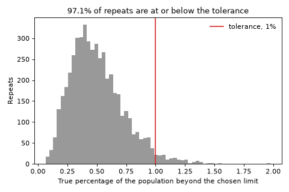
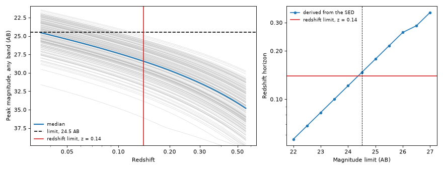

Redshift Limits#
Every ExtragalacticTransient has a
redshift_limit: the farthest
redshift out to which it samples events. The number is not a guess. For every population shipped
with the package it is derived from the SED, using a calculation that says, in plain terms, “beyond
this redshift, almost nothing this population produces is bright enough for UVEX to see”. This
page explains that calculation, shows how to run it, and shows how to check that the answer makes
sense.
For what the limit does inside a simulation, and for a worked example that derives and assigns a limit by hand, see Setting a Kilonova Class’s Redshift Limit from its SED.
The Question#
The limit exists for efficiency, not correctness. Every sampled event is later tested against the survey, so a sampled event that is too faint is rejected anyway. But a limit set too far out fills the sample with distant events that are certain to be rejected, and every one of them is simulated before that happens. A limit set too close is worse, because it silently removes events that UVEX could have detected. We want the smallest limit that does not cut off anything that matters.
Stated precisely, we ask for the redshift \(z_L\) such that, with confidence \(C\), at most a fraction \(\delta\) of the population is detectable beyond \(z_L\). Every built-in population uses \(C=95\%\) and \(\delta=1\%\), with a detection threshold of 24.5 AB, the UVEX 1 Dwell limit.
We ask about a fraction of the population, instead of the single farthest event, on purpose. A population drawn from continuous priors always contains a rare, extremely bright draw somewhere in its tail. If we insisted that no event at all be detectable beyond the limit, that one extreme draw would set the answer, and it would push the limit out to redshifts where essentially every other event is invisible. Allowing a 1% sliver costs almost nothing in completeness and removes that sensitivity.
Following Each Draw Out in Redshift#
The calculation starts by drawing a large number of parameter sets from the SED’s priors. Each draw is one particular transient: a fixed peak luminosity, temperature, timescale, and so on. We then ask how bright that one transient would look if it exploded at larger and larger distances.
So redshift is not randomly drawn here. It is a grid that every draw is carried across. Giving each draw a single random redshift would tell us how bright it looks at one distance, and nothing about where it fades below the limit, which is the thing we need. The point of the calculation is to follow each draw until it disappears.
At each redshift, we compute the draw’s light curve in each UVEX band and keep its brightest point. We then keep the brighter of the two bands, since an event seen in either one counts. The result is a single number per draw per redshift, its effective peak magnitude. Plotted against redshift, each draw becomes one line that gets fainter as it moves out.
Two details are worth knowing. First, the light curve is evaluated in the event’s own rest frame. Time dilation stretches the light curve as seen by us, but it does not change how bright its peak is, so we never need to know when UVEX happened to look. Second, the brightest epoch is found separately at each redshift. As redshift grows, the band slides across the event’s spectrum (the K-correction), and this can change which part of the light curve is brightest in that band.
From Lines to Detection Redshifts#
Each draw’s line crosses the magnitude limit somewhere. The redshift of that first crossing is the draw’s detection redshift: the farthest distance at which it could still be seen. We round each one up to the next point on the redshift grid, so the grid can only make an event look slightly more detectable than it is. That is the safe direction for a limit.
The population’s detection redshifts are now a set of \(M\) numbers, one per draw. The limit we want is a statement about how far the top of that distribution reaches.
From Draws to a Guarantee#
The largest of the \(M\) detection redshifts is the obvious candidate for the limit, but it tells us only about the draws we happened to make. A different batch of draws could easily have produced a farther-reaching extreme. We need a way to turn a finite sample into a statement about the whole population, and this is what the confidence level is for.
The tool is a classical result for order statistics (Wilks, 1941), and it needs no assumption about the shape of the distribution. Sort the detection redshifts from farthest to nearest and take the \(r\)-th farthest as the limit. Suppose the true fraction of the population beyond that value were larger than \(\delta\). Then each draw would land beyond it with probability greater than \(\delta\), and it would be unusual for fewer than \(r\) of our \(M\) draws to have done so. How unusual is given by the binomial distribution. Requiring that this happen less than \(1-C\) of the time gives
We take the largest \(r\) that satisfies this. A larger \(r\) gives a smaller, tighter limit, so this is the tightest limit that still carries the guarantee. For \(r=1\), the condition reduces to \(1-(1-\delta)^M \ge C\), which sets the fewest draws that can support the guarantee at all: 299 draws for \(C=95\%\) and \(\delta=1\%\). More draws allow a larger \(r\), and so a tighter limit:
Number of draws \(M\) |
Rank \(r\) used |
|---|---|
300 |
1 (the largest) |
500 |
2 |
1000 |
5 |
5000 |
39 |
The guarantee can be checked directly. The figure below uses a stand-in population whose true tail is known exactly. We repeat the whole procedure 5000 times, each time with a fresh set of 1000 draws, and record the true fraction of the population beyond the limit we would have chosen. In at least 95% of the repeats, that fraction is at most 1%, as promised, and the title reports the value found. It is usually well below 1%, because the guarantee has to hold in the unlucky repeats too.
(Source code, png, hires.png, pdf)



Running It#
get_detection_horizon() does all of
the above for a transient class. It takes the magnitude limits to evaluate and the bandpasses an
event can be detected in, and reads the time window from the class itself. We also say which
redshifts to cover. The grid below spans a factor of 16 around the class’s current limit, which is
wide enough to bracket the answer for any depth between 22 and 27 AB, without spending points at
redshifts where nothing is happening. The call returns a table of limits, one row per magnitude
limit, and the grid of effective peak magnitudes it was built from. We use the kilonova class here
because it is quick to evaluate.
import numpy as np
import matplotlib.pyplot as plt
from uvex_transients.missions import uvex_fast as uvex
from uvex_transients.transients.kilonovae import Kilonova
from uvex_transients.utils.plotting import plot_detection_horizon
kilonova = Kilonova()
curve, grid = kilonova.get_detection_horizon(
np.arange(22.0, 27.01, 0.5),
uvex.detector.bandpasses,
z_min=kilonova.redshift_limit / 4,
z_max=4 * kilonova.redshift_limit,
n_samples=500,
rng=0,
progress=False,
)
print(curve)
plot_detection_horizon(kilonova, curve, grid, mag_limit=24.5)
plt.show()
(Source code, png, hires.png, pdf)



Evaluating many magnitude limits at once is nearly free, because the expensive step is following the draws across redshift, and that does not depend on the limit. The grid is also returned so that further limits, confidences, or tolerances can be tried without redoing it.
The number to adopt is the table’s value at 24.5 AB, rounded up to two significant figures. That
is the value stored in each class’s DEFAULT_Z_LIM. The quick run above gives about 0.15 for the
kilonovae, a little above the 0.14 the class uses. The difference comes from the grid of 30
redshifts, since rounding each draw up to the next grid point can overestimate the limit by a whole
grid step, about 10% here. The script scripts/derive_redshift_limits.py removes most of that. It repeats the
calculation on a finer grid around the first answer, and it reproduces the values of the built-in
classes. Re-run it whenever an SED’s priors, a class’s duration, or the survey depth change, and copy
the printed values into the classes.
Checking the Result#
The figure above is the standard check, and it is worth looking at every time a limit is derived or an SED is changed. The left panel shows the calculation itself. Each grey line is one draw, the blue line is the median draw, the dashed line is the magnitude limit, and the red line is the redshift limit in use. A draw is detectable wherever its line is above the dashed one, so the grey lines should cross it to the left of the red line, with only a handful, about 1%, reaching past it. The right panel shows the limit the SED supports at every survey depth, next to the limit in use. The curve should pass close to the limit in use at 24.5 AB, the depth it was derived for. It sits at or slightly above it, as it does in the figure above, because this quick run uses the coarse grid. The curve is a staircase for the same reason, since each point is rounded up to the grid.
Three failure modes are easy to recognize in these panels:
The limit in use is too low. Many grey lines are still above the dashed line to the right of the red one. This usually means the SED changed, for example its priors became brighter, and the limit was not re-derived.
The grid is too short. If some draws never cross the limit inside the redshift grid, the table reports an infinite limit and logs a warning. The method already extends the grid several times on its own, so this should only appear for a very bright or very deep case, where the starting range
z_maxneeds raising.The time window is too short. If a draw’s light curve is still rising when the window ends, its peak is missed, so it looks fainter than it is and the limit comes out too low. This is the direction that is not conservative. Check that the class’s
duration_limitcovers the peak of the light curve, and, because the window is sampled on a grid of times, that the grid is dense enough to resolve the peak.
What the Limit Does Not Cover#
The statement is narrower than it may sound, and it helps to know where its edges are.
It covers the SED’s parameter priors only. Milky Way extinction and sky position are not included, so a field behind heavy dust is fainter than the calculation assumes. Leave a margin for dusty fields.
It bounds the fraction of the population that is detectable beyond the limit, not the fraction of detected events. Because the comoving volume grows so quickly with redshift, distant events dominate the sampled population, and the two fractions are not the same.
It treats detection as a single brightness threshold. Real detection also depends on the schedule, the cadence, and the signal to noise of each visit, which is what the simulation’s later stages are for. The limit only ensures those stages are not asked to process events that could never pass.
Only the first crossing of the limit counts. If a K-correction makes an event brighten again at a still larger redshift, that second appearance is ignored.